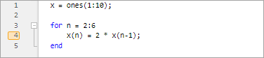
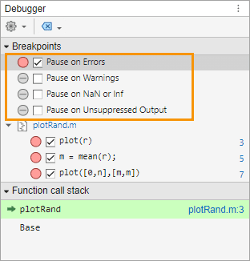
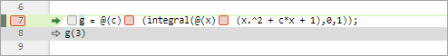
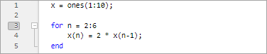

Set Breakpoints
Setting breakpoints pauses the execution of your MATLAB® program so that you can examine values where you think an issue might have occurred. You can set breakpoints interactively in the Editor or Live Editor, or by using functions in the Command Window.
There are three types of breakpoints:
Standard
Conditional
Error
You can set breakpoints only at executable lines in saved files that are in the current folder or in folders on the search path. You can set breakpoints at any time, whether MATLAB is idle or busy running a file.
By default, when MATLAB reaches a breakpoint, it opens the file containing the breakpoint. To disable this option:
From the Home tab, in the Environment section, click
 Settings.
Settings.In the Settings window, select MATLAB > Editor/Debugger.
Clear the Automatically open file when MATLAB reaches a breakpoint option and click OK.
Standard Breakpoints
A standard breakpoint pauses at a specific line in a file. To set a standard breakpoint, click the gray area to the left of the executable line where you want to set the breakpoint. Alternatively, you can press the F12 key to set a breakpoint at the current line. If you attempt to set a breakpoint at a line that is not executable, such as a comment or a blank line, MATLAB sets it at the next executable line.

To set a standard breakpoint programmatically, use the dbstop function. For example, to add a breakpoint at line three in a
file named plotRand.m,
type:
dbstop in plotRand at 3
When debugging a file that contains a loop, set the breakpoint inside the loop to
examine the values at each increment of the loop. Otherwise, if you set the
breakpoint at the start of the loop, MATLAB pauses at the loop statement only once. For example, this code creates
an array of ten ones and uses a for loop to perform a
calculation on items two through six of the
array:
x = ones(1:10); for n = 2:6 x(n) = 2 * x(n-1); end
for loop (a
total of five times), set a breakpoint at line four.Conditional Breakpoints
A conditional breakpoint causes MATLAB to pause at a specific line in a file only when the specified condition is met. For example, you can use conditional breakpoints when you want to examine results after some iterations in a loop.
To set a conditional breakpoint, right-click the gray area to the left of the executable line where you want to set the breakpoint and select Set Conditional Breakpoint. If a breakpoint already exists on that line, select Set/Modify Condition. Alternatively, you can set or modify the condition in the Debugger panel by right-clicking the breakpoint and selecting Set/Modify Condition. (since R2025a) In the dialog box that opens, enter a condition and click OK. A condition is any valid MATLAB expression that returns a logical scalar value.
When you run the code, MATLAB evaluates the condition before running the line. If the condition is
met, MATLAB enters debug mode and pauses at the line. For example, this code
creates an array of ten ones and uses a for loop to perform a
calculation on items two through six of the
array:
x = one(1:10) for n = 2:6 x(n) = 2 * x(n-1); end
Set a conditional breakpoint at line four with the condition n >=
4. When you run the code, MATLAB runs through the for loop twice and pauses on the
third iteration at line four when n is 4. If
you continue running the code, MATLAB pauses again at line four on the fourth iteration when
n is 5, and then once more, when
n is 6.

To set a conditional breakpoint programmatically, use the dbstop function. For example, to add a conditional breakpoint in
myprogram.m at line six, type:
dbstop in myprogram at 6 if n>=4
Error Breakpoints
You can set an error breakpoint to have MATLAB pause and enter debug mode if MATLAB encounters an issue.
Unlike standard and conditional breakpoints, you do not set error breakpoints at a specific line or in a specific file. When you set an error breakpoint, MATLAB pauses at any line in any file if the error condition specified occurs. MATLAB then enters debug mode and opens the file containing the error, with the execution arrow at the line containing the error.
You can set error breakpoints in the
Debugger panel. To open the Debugger panel if it is not open, go to the
Editor or Live Editor tab, and in the
Analyze section, click  Debugger. You also can open the panel using the Open more
panels button
Debugger. You also can open the panel using the Open more
panels button  on a sidebar. (since R2025a)
on a sidebar. (since R2025a)
To set an error breakpoint, in the Debugger panel Breakpoints section, select one of these options:
Pause on Errors to pause on all errors.
Pause on Warnings to pause on all warnings.
Pause on NaN or Inf to pause on
NaN(not-a-number) orInf(infinite) values.Pause on Unsuppressed Output to pause when unsuppressed output is displayed because the line is not suppressed by a semicolon (
;).

Alternatively, you can set an error breakpoint in the Editor by going to the
Editor tab, clicking  Run
Run
 and selecting an option from the Error
Handling section.
and selecting an option from the Error
Handling section.
To set an error breakpoint programmatically, use the dbstop function with a specified condition. For
example, to pause execution on all errors,
type:
dbstop if error
try
portion of a try/catch block that has a message ID of
MATLAB:ls:InputsMustBeStrings,
type:dbstop if caught error MATLAB:ls:InputsMustBeStrings
Before R2025a: Setting error breakpoints in the Live Editor is not supported.
Breakpoints in Anonymous Functions
You can set multiple breakpoints in a line of MATLAB code that contains anonymous functions. You can set a breakpoint for the line itself and for each anonymous function in the line.
To set a breakpoint on a line containing an anonymous function, click the gray area to the left of the line. MATLAB adds a breakpoint for the line, and a disabled breakpoint for each anonymous function in the line. To enable a breakpoint for an anonymous function, click the disabled breakpoint for that function.
To view information about all the breakpoints on a line, place your cursor on the breakpoint icon. A tooltip appears with available information. For example, in this code, line seven contains two anonymous functions, with a breakpoint at each one.

When you set a breakpoint in an anonymous function, MATLAB pauses when the anonymous function is called. The line highlighted in
green is where the code defines the anonymous function. The line highlighted in gray
is where the code calls the anonymous functions. For example, in this code,
MATLAB pauses the program at a breakpoint set for the anonymous function
g, defined at line seven, and called at line eight.

Invalid Breakpoints
A dark gray breakpoint indicates an invalid breakpoint.

Breakpoints are invalid for these reasons:
Unsaved changes in the file. To make breakpoints valid, save the file. The gray breakpoints become red, indicating that they are now valid.
A syntax error in the file. When you set a breakpoint, an error message appears indicating where the syntax error is. To make the breakpoint valid, fix the syntax error and save the file.
Disable Breakpoints
You can disable selected breakpoints so that your program temporarily ignores them and runs uninterrupted. For example, you might disable a breakpoint after you think you identified and corrected an issue or if you are using conditional breakpoints.
To disable a breakpoint, right-click the breakpoint icon in the Editor or Live Editor, and select Disable Breakpoint from the context menu. The breakpoint becomes light gray to indicate that it is disabled. To reenable a breakpoint, right-click the breakpoint icon and select Enable Breakpoint from the context menu. The gray breakpoint becomes red, and program execution pauses at that line. To disable or reenable a breakpoint from the Debugger panel, right-click the breakpoint in the panel and select Disable or Enable. (since R2025a)

To enable or disable all breakpoints in the file, right-click the gray area to the left of an executable line and select Enable All Breakpoints in File or Disable All Breakpoints in File. These options are available only if there is at least one breakpoint to enable or disable.
Clear Breakpoints
All breakpoints remain in a file until you clear (remove) them or until they are cleared automatically at the end of your MATLAB session.
To clear a breakpoint, right-click the breakpoint icon and select Clear Breakpoint from the context menu. Alternatively, you can press the F12 key to clear the breakpoint. To clear all breakpoints in the file, right-click the breakpoint alley and select Clear All Breakpoints in File. To clear all breakpoints in all files, including error breakpoints, right-click the breakpoint alley and select Clear All Breakpoints.
In the Debugger panel, to clear a
breakpoint, right-click the breakpoint in the panel and select
Clear. To clear all breakpoints, at the top of the
panel, click the  next to the Clear button
and select Clear All
Breakpoints (since R2025a)
next to the Clear button
and select Clear All
Breakpoints (since R2025a)
To clear breakpoints programmatically, use the dbclear function. For example, to
clear the breakpoint at line six in a file called myprogram.m,
type:
dbclear in myprogram at 6
To clear all the breakpoints in a file called myprogram.m,
type:
dbclear all in myprogram
To clear all breakpoints in all files type:
dbclear all
Breakpoints clear automatically when you end a MATLAB session. To save your breakpoints for future sessions, use the
dbstatus function.